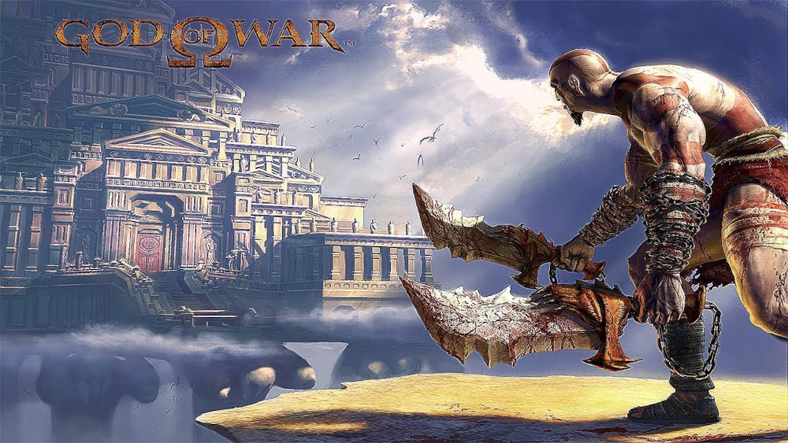
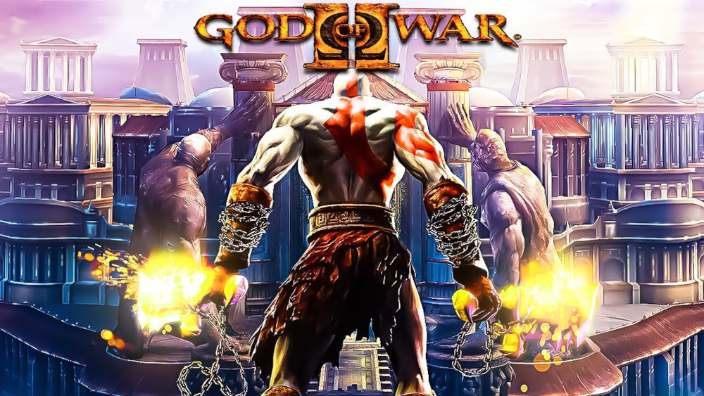
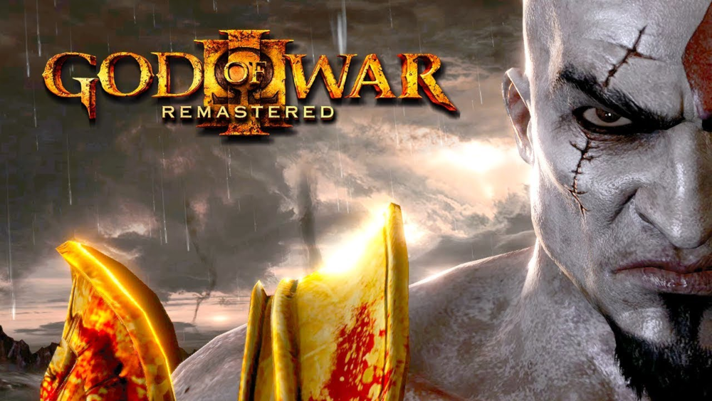
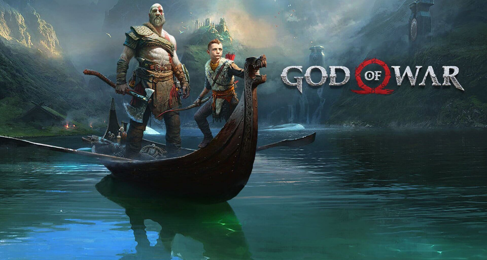

No início do jogo, vemos Kratos se posicionando na beira de um penhasco, dizendo que os Deuses do Olimpo o abandonaram e que não havia mais esperança para ele, que então se joga do penhasco com a intenção de suicidar-se. O jogo então retrocede para três semanas antes, quando Kratos está em um navio no Mar Egeu que está sendo atacado pela temível Hidra. Após avançar e assassinar a Hidra, ele entra em uma sala onde corpos mutilados de tripulantes jaziam. Aquilo trás a Kratos flashbacks de um passado brutal do qual ele nunca se esqueceria.

Após Kratos se tornar o novo deus da guerra, passa a guiar os soldados de Esparta, liderando-os sobre várias batalhas e destruindo várias cidades. Antes de descer do Olimpo para ajudar seus guerreiros espartanos a destruir a cidade de Rodes, Kratos é avisado por Atena sobre as consequências de seus atos. Sem escutá-la, ele salta do Olimpo para Rodes e, ao chegar, uma águia retira parte do poder de Kratos e o deposita em uma estátua gigante (o Colosso de Rodes). Kratos, com muita raiva e acreditando ser Atena a responsável, vai em busca de derrotar o colosso para provar para os deuses do Olimpo que ele merece ser um deus. Nisso, Zeus, num aparente gesto de generosidade, oferece a Kratos a arma que acabou com a Grande Guerra e derrotou os titãs, a Lâmina do Olimpo. Somente com ela, Kratos conseguiria derrotar o Colosso.

Kratos e Gaia chegam ao topo do Monte Olimpo, e encontram com Zeus. Depois de uma conversa entre pai e filho, acabam sendo derrubados do Monte Olimpo por um raio dele. Após ambos serem jogados para trás, Gaia tenta se segurar ao Monte Olimpo, mas acaba fazendo com que Kratos não consiga se segurar nela. Gaia diz que não pode ajudá-lo, e explica para Kratos que se ela ajudá-lo ambos iriam cair. Ela fala que a guerra dos Titãs com os deuses é mais importante que a vingança de Kratos, e que ele fora um mísero peão para essa luta. Após isso, ele cai do Monte Olimpo, enquanto Gaia continua tentando se segurar.

Quando Kratos e Atreus são emboscados por Modi, Atreus tem um acesso de fúria durante a luta, oque faz com que adoeça, Kratos então leva o garoto para a cabana de Freya, e lá ela explica que a condição de Atreus se deve ao fato de, Atreus, um Deus, acreditar ser um mortal, e está contradição sobre sua verdadeira natureza faz com que o adoeça. Ela diz a Kratos que, para curar Atreus, ele deve recuperar o coração do Guardião da Ponte dos Condenados em Helheim. Ela avisa que o Machado Leviatã será inútil por lá. E então, Kratos diz:
- Então devo voltar para casa... mexer no passado que jurei deixar enterrado.